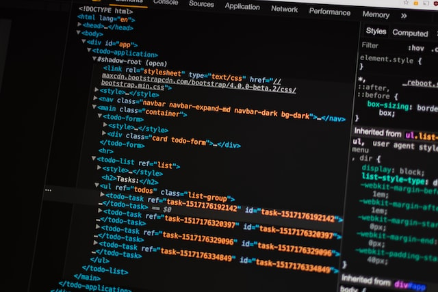

CS50
The CS50 course at Harvard is an awesome way to learn computer science. It covers a wide range of topics, including algorithms, computer architecture, data structures, databases, and web development. The course is taught by world-renowned professors and includes engaging lectures, interactive problem sets, and hands-on projects. Whether you are a beginner or an experienced programmer, you will learn a lot from this course and have fun doing it.
Go to the course

Webpage using bootstrap
As per problem set 08 CS50's problem set 08 this is my webpage, using tags as main, div, img, buttons and more. And harnessing the power of bootstrap.